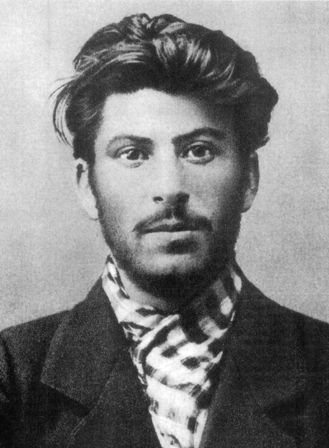
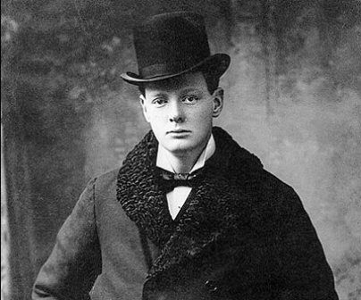
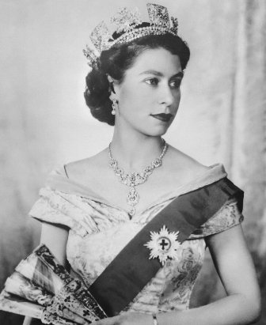

joe
Joseph Vissarionovich Stalin
(18 December 1878 – 5 March 1953) was
the leader of the Soviet Union from the mid-1920s until his death in 1953.
Holding the post of the General Secretary of the Central Committee of the Communist Party of the Soviet Union, he was effectively the dictator of the state.
Stalin was one of the seven members of the first Politburo, founded in 1917 in order to manage the Bolshevik Revolution, alongside Lenin,
Zinoviev, Kamenev, Trotsky, Sokolnikov, and Bubnov. Among the Bolshevik revolutionaries who took part in the Russian Revolution of 1917,
Stalin was appointed General Secretary of the party's Central Committee in 1922.

winnie
Sir Winston Leonard Spencer-Churchill
(30 November 1874 – 24 January 1965) was a British statesman who was the Prime Minister of the United Kingdom from 1940 to 1945 and again from 1951 to 1955.
Churchill was also an officer in the British Army, a non-academic historian, a writer (as Winston S. Churchill), and an artist.
He won the Nobel Prize in Literature in 1953 for his overall, lifetime body of work.
In 1963, he was the first of only eight people to be made an honorary citizen of the United States.

liza
Elizabeth II
(Elizabeth Alexandra Mary; born 21 April 1926) is, and has been since her accession in 1952,
Queen of the United Kingdom, Canada, Australia, and New Zealand, and Head of the Commonwealth.
She is also queen of 12 countries that have become independent since her accession: Jamaica, Barbados, the Bahamas, Grenada, Papua New Guinea, Solomon Islands, Tuvalu,
Saint Lucia, Saint Vincent and the Grenadines, Belize, Antigua and Barbuda, and Saint Kitts and Nevis.
Elizabeth was born in London as the elder daughter of the Duke and Duchess of York, later King George VI
and Queen Elizabeth. She was educated privately at home. Her father acceded to the throne on the abdication of his brother Edward VIII in 1936,
from which time she was the heir presumptive. She began to undertake public duties during the Second World War, serving in the Auxiliary
Territorial Service. In 1947, she married the Duke of Edinburgh, with whom she has four children: Charles, Anne, Andrew, and Edward.